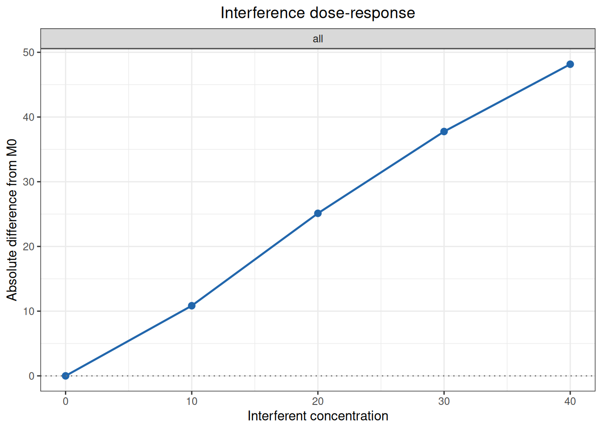
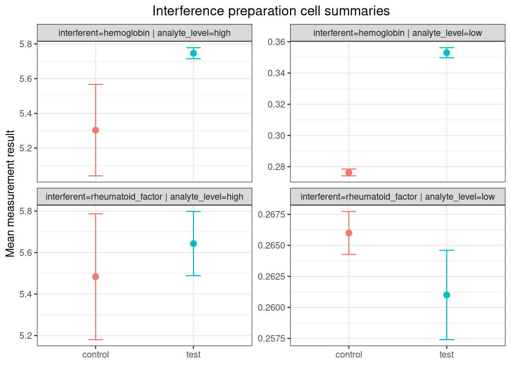

%%{init: {"theme":"base","themeVariables":{"primaryColor":"#EAF2FB","primaryBorderColor":"#2780E3","primaryTextColor":"#212529","lineColor":"#6C757D","secondaryColor":"#EAF7E6","tertiaryColor":"#FFF4E8","fontSize":"13px"},"flowchart":{"nodeSpacing":18,"rankSpacing":24,"padding":6}}}%%
flowchart LR
A["预先规定<br/>允许差异"] --> B["interference_replicates()<br/>设计重复数"]
B --> C["interference_paired()<br/>最高临床相关浓度筛查"]
C --> D{"需要描述<br/>剂量—响应？"}
D -->|是| E["interference_dose_response()"]
D -->|否| F["汇总筛查证据"]
E --> G["interference_patient()<br/>患者样本补充证据"]
F --> G
G --> H["结合预设限值解释"]
classDef input fill:#EAF2FB,stroke:#2780E3,color:#212529
classDef process fill:#EAF7E6,stroke:#3FB618,color:#212529
classDef decision fill:#FFF4E8,stroke:#FF7518,color:#212529
classDef output fill:#F4EEFB,stroke:#9954BB,color:#212529
class A input
class B,C,E,G process
class D decision
class F,H output
7 干扰研究
本文演示如何使用 ivdtools 包评价潜在干扰物对测量结果的影响。内容覆盖 CLSI EP07 配对干扰筛查的重复数设计和效应估计、干扰物剂量—响应分析、患者样本证据与交叉反应换算，以及 CLSI EP07、YY/T 1789.5—2023 的标准案例复算。
重要使用边界
本文中的普通数据是确定性教学示例，标准案例用于核对统计计算。示例的干扰物、浓度、分析物水平和允许干扰限不是通用接受标准；正式研究必须在查看结果前，根据医学需求、风险评估或适用文件规定试验设计和判定规则。
interference_* 函数计算重复数、效应、区间和诊断信息，不自动宣布有无干扰，也不替代样品制备、随机化、分析物水平与干扰物范围选择、重复性验证或结果调查。人工添加试验可能引入基质和制备假象，患者样本研究也只能反映实际入选样本中出现的因素。
干扰研究通常按以下路径开展。这些阶段的样品单位和所回答的问题不同：
| 分析路径 | 主要问题 | 主要结果 |
|---|---|---|
| 配对制备筛查 | 在指定分析物和干扰物水平下，试验样品与溶剂对照是否有足够大的差异 | 试验减对照的绝对/相对效应及置信区间 |
| 剂量—响应 | 干扰效应如何随干扰物浓度变化 | 相对基线的效应、单调性和范围内插值 |
| 患者样本比较 | 含潜在干扰因素的患者样本是否显示程序间差异或离散性增大 | 逐样本程序差、组别汇总及差异—干扰物回归 |
代码
library(ivdtools)
library(readr)7.1 主要函数
| 函数 | 用途 | 返回值 |
|---|---|---|
interference_replicates() |
计算试验样品和对照样品各自所需的重复数 | interference_replicates 数据框 |
interference_paired() |
分析配对制备的干扰试验 | interference_paired 对象 |
interference_dose_response() |
分析干扰物剂量—响应数据 | interference_dose_response 对象 |
predict() |
对剂量—响应结果进行正向或反向预测 | 预测结果数据框 |
interference_patient() |
分析患者样本的程序间差异 | interference_patient 对象 |
7.1.1 建立重复数计划 interference_replicates()
调用形式
代码
interference_replicates(
sd,
detectable_difference,
alpha = 0.05,
power = 0.90,
alternative = c("two.sided", "one.sided"),
min_replicates = 5L,
label = NULL
)参数
| 参数 | 说明 |
|---|---|
sd |
预期重复性 SD；相对尺度计算时填写重复性 CV。可输入数值向量。 |
detectable_difference |
需要检出的最小干扰差异，与 sd 使用相同尺度和兼容长度。 |
alpha |
第一类错误概率，必须为 0～1 之间的单个有限数值。 |
power |
目标检验效能，必须为 0～1 之间的单个有限数值。 |
alternative |
"two.sided" 表示双侧设计，"one.sided" 表示单侧设计。 |
min_replicates |
每份试验样品和对照样品返回的最少重复数，默认为 5。 |
label |
可选标签；每项计算一个标签。 |
返回值
返回 interference_replicates 类数据框，每行对应一项重复数设计。主要字段包括输入值 sd、detectable_difference、alpha、power 和 alternative，中间量 difference_over_sd、z_alpha 和 z_power，以及舍入前的 calculated_replicates 和最终建议的 replicates_per_sample。最终重复数适用于试验样品和对照样品中的每一份样品。
7.1.2 配对制备试验 interference_paired()
调用形式
代码
interference_paired(
data,
result,
design = c("ep07", "analyte_spike", "blank"),
by = NULL,
condition = NULL,
test_level = "test",
control_level = "control",
matrix = NULL,
normal_level = "normal",
interferent_level = "interferent",
spike = NULL,
unspiked_level = "unspiked",
spiked_level = "spiked",
conf.level = 0.95
)参数
| 参数 | 说明 |
|---|---|
data |
长格式数据框，每行是一项重复测量结果。 |
result |
数值型测量结果列的列名。 |
design |
"ep07"、"analyte_spike" 或 "blank"。 |
by |
可选分层列名字符向量，如干扰物名称和分析物水平。 |
condition |
ep07 设计中的试验/对照条件列；blank 设计中为可选条件列。 |
test_level、control_level |
分别标识试验条件和溶剂对照条件的取值。 |
matrix |
analyte_spike 设计中的基质类型列。 |
normal_level、interferent_level |
分别标识正常基质和含干扰物基质的取值。 |
spike |
analyte_spike 设计中的分析物添加状态列。 |
unspiked_level、spiked_level |
分别标识添加分析物前后状态的取值。 |
conf.level |
效应置信区间的置信水平。 |
design = "ep07" 使用 condition、test_level 和 control_level；design = "analyte_spike" 使用 matrix 与 spike 相关参数；design = "blank" 使用 condition 区分干扰物空白和对照，或在没有对照记录时与理论零比较。
返回值
返回 interference_paired 类对象。effects 给出各分层的样本量、试验/对照均值、绝对及相对效应、标准误和置信区间；cell_summary 给出各制备单元的样本量、均值、SD 和 SE；issues 记录数据问题；excluded_rows 保存被排除的原始行号；analysis_data 保存进入分析的数据。plot() 方法返回各制备单元及效应的图形对象。
7.1.3 剂量—响应 interference_dose_response()
调用形式
代码
interference_dose_response(
data,
result,
concentration,
by = NULL,
baseline = 0,
method = c("point_to_point", "linear"),
conf.level = 0.95
)
predict(
object,
newdata = NULL,
target = NULL,
metric = c("result", "absolute", "percent"),
stratum = NULL
)
plot(x, type = c("response", "absolute", "percent"))参数
| 参数 | 说明 |
|---|---|
data |
长格式剂量—响应数据框。 |
result |
数值型测量结果列的列名。 |
concentration |
数值型干扰物浓度列的列名。 |
by |
可选分层列名字符向量。 |
baseline |
用于估计基线均值的实测干扰物浓度；该浓度必须存在于每个分层。 |
method |
"point_to_point" 按相邻浓度均值插值；"linear" 对单次结果拟合直线。 |
conf.level |
线性回归系数的置信水平。 |
predict() 的 object 为剂量—响应结果对象。newdata 指定干扰物浓度并正向预测结果或效应；target 指定结果或效应并反向预测干扰物浓度，两者必须且只能提供一个。metric 选择测量结果、绝对效应或百分比效应尺度；stratum 可限定一个或多个分层。函数不进行外推，超出实测范围时返回缺失值。plot() 的 type 选择测量结果、绝对效应或百分比效应图。
返回值
interference_dose_response() 返回同名 S3 类对象。summary 保存各浓度的重复数、均值、SD、SE、CV、绝对效应和百分比效应；diagnostics 保存基线均值、浓度水平数、重复数范围和单调性；线性方法的系数和模型分别保存在 coefficients 和 models；issues、excluded_rows 和 analysis_data 保存数据检查信息。predict() 返回包含 stratum、direction、metric、input、estimate 和 within_observed_range 的数据框。
7.1.4 患者样本比较 interference_patient()
调用形式
代码
interference_patient(
data,
id,
group,
method,
result,
test_group,
control_group,
evaluated_method,
comparative_method,
interferent_cols = NULL,
conf.level = 0.95
)
plot(
x,
type = c("difference", "interferent"),
interferent = NULL
)参数
| 参数 | 说明 |
|---|---|
data |
长格式患者样本结果数据框。 |
id |
样本标识列的列名。 |
group |
患者试验组/对照组列的列名。 |
method |
测量程序列的列名。 |
result |
数值型测量结果列的列名。 |
test_group、control_group |
分别标识患者试验组和对照组的取值。 |
evaluated_method、comparative_method |
分别标识待评价程序和对比程序的取值，并确定差值方向为待评价程序减对比程序。 |
interferent_cols |
可选的数值型干扰物浓度列名字符向量；每列分别拟合一个一元线性模型。 |
conf.level |
组别汇总和回归系数的置信水平。 |
plot() 的 x 为患者样本分析结果。type = "difference" 绘制程序差相对于对比程序均值的图；type = "interferent" 绘制程序差相对于指定干扰物浓度的图。存在多个干扰物浓度列时，必须用 interferent 指定其中一列。
返回值
返回 interference_patient 类对象。method_summary 保存每个“样本 × 程序”的重复数、均值和 SD；specimen_results 保存完整程序对及其绝对和相对差异；group_summary 保存各患者组的差异汇总和置信区间；regressions 与 models 保存各干扰物的一元回归结果；issues、incomplete_ids 和 excluded_rows 分别记录数据问题、不完整程序对和被排除的原始行号。plot() 返回相应的图形对象。
7.2 分析案例
7.2.1 CLSI EP07 第 3 版第 5.1 节：重复数设计
EP07 第 5.1.1 节的双侧示例要求在重复性 SD 为 1.0 mg/dL 时，以 95% 置信水平和 95% 效能检出 1.5 mg/dL 的效应；第 5.1.4 节则假设重复性 CV 为 5%，以 95% 置信水平和 90% 效能分别检出 7% 和 10% 的效应。SD 与差异、CV 与百分比差异分别位于同一尺度，因此可以用相同公式计算。
代码
ep07_replicates_511 <- interference_replicates(
sd = 1,
detectable_difference = 1.5,
alpha = 0.05,
power = 0.95,
label = "5.1.1 two-sided"
)
ep07_replicates_514 <- interference_replicates(
sd = c(5, 5),
detectable_difference = c(7, 10),
alpha = 0.05,
power = 0.90,
label = c("5.1.4 7%", "5.1.4 10%")
)
rbind(ep07_replicates_511, ep07_replicates_514)EP07 paired-difference replicate design
Label: 5.1.1 two-sided
SD : 1
Detectable difference : 1.5
Difference / SD : 1.5
Alpha : 0.05
Power : 0.95
Alternative : two.sided
Z alpha : 1.959964
Z power : 1.6448536
Calculated replicates : 11.550853
Replicates per sample : 12
Minimum replicates : 5
Label: 5.1.4 7%
SD : 5
Detectable difference : 7
Difference / SD : 1.4
Alpha : 0.05
Power : 0.9
Alternative : two.sided
Z alpha : 1.959964
Z power : 1.2815516
Calculated replicates : 10.72186
Replicates per sample : 11
Minimum replicates : 5
Label: 5.1.4 10%
SD : 5
Detectable difference : 10
Difference / SD : 2
Alpha : 0.05
Power : 0.9
Alternative : two.sided
Z alpha : 1.959964
Z power : 1.2815516
Calculated replicates : 5.2537115
Replicates per sample : 6
Minimum replicates : 5| 标准位置 | 统计量 | 标准结果 | ivdtools结果 |
|---|---|---|---|
| 5.1.1 two-sided | calculated_replicates | 11.550853 | 11.550853 |
| 5.1.1 two-sided | replicates_per_sample | 12.000000 | 12.000000 |
| 5.1.4 7% | calculated_replicates | 10.721860 | 10.721860 |
| 5.1.4 7% | replicates_per_sample | 11.000000 | 11.000000 |
| 5.1.4 10% | calculated_replicates | 5.253712 | 5.253712 |
| 5.1.4 10% | replicates_per_sample | 6.000000 | 6.000000 |
重复数必须对每一份试验样品和对照样品分别满足，不能把两组次数相加后理解为总样本量要求。
7.2.2 CLSI EP07 第 3 版表 3：配对筛查
EP07 表 3 在 0.50 mg/dL 和 5.00 mg/dL 两个分析物水平，以 500 mg/dL 干扰物浓度分别比较 5 次试验样品与 5 次溶剂对照。效应方向统一为 test − control；低水平使用绝对差，高水平使用相对于对照均值的百分比差。
代码
ep07_table3 <- read_csv(
"./data/007-干扰研究/std-ep07-table3-paired.csv",
show_col_types = FALSE
)
head(ep07_table3, 6)# A tibble: 6 × 5
level condition replicate result unit
<chr> <chr> <dbl> <dbl> <chr>
1 low control 1 0.45 mg/dL
2 low control 2 0.56 mg/dL
3 low control 3 0.48 mg/dL
4 low control 4 0.54 mg/dL
5 low control 5 0.47 mg/dL
6 low test 1 0.24 mg/dL代码
ep07_table3_result <- interference_paired(
as.data.frame(ep07_table3),
result = "result",
design = "ep07",
condition = "condition",
test_level = "test",
control_level = "control",
by = "level",
conf.level = 0.95
)
ep07_table3_resultInterference paired-difference analysis
Design: ep07
Confidence level: 95%
level: low
stratum : level=low
design : ep07
n_test : 5
n_control : 5
test_mean : 0.3
control_mean : 0.5
absolute_difference : -0.2
absolute_se : 0.033166248
df : 8
absolute_ci_lower : -0.2764815
absolute_ci_upper : -0.1235185
percent_difference : -40
percent_se : 6.6332496
percent_ci_lower : -55.296301
percent_ci_upper : -24.703699
level: high
stratum : level=high
design : ep07
n_test : 5
n_control : 5
test_mean : 4.55
control_mean : 5
absolute_difference : -0.45
absolute_se : 0.096436508
df : 8
absolute_ci_lower : -0.67238299
absolute_ci_upper : -0.22761701
percent_difference : -9
percent_se : 1.9287302
percent_ci_lower : -13.44766
percent_ci_upper : -4.5523403复算的低水平对照/试验均值为 0.50/0.30 mg/dL，绝对效应为 −0.20 mg/dL，95% CI 为 −0.28～−0.12 mg/dL；高水平对照/试验均值为 5.00/4.55 mg/dL，相对效应为 −9.0%，95% CI 按从小到大书写为 −13.4%～−4.6%。标准表把高水平区间按“−4.6, −13.4”的反序列示，这里只调整显示顺序，不改变端点。
| 标准位置 | 统计量 | 标准结果 | ivdtools结果 |
|---|---|---|---|
| low | control_mean | 0.500 | 0.5000 |
| low | test_mean | 0.300 | 0.3000 |
| low | control_sd | 0.047 | 0.0474 |
| low | test_sd | 0.057 | 0.0570 |
| low | difference | -0.200 | -0.2000 |
| low | ci_lower | -0.280 | -0.2765 |
| low | ci_upper | -0.120 | -0.1235 |
| high | control_mean | 5.000 | 5.0000 |
| high | test_mean | 4.550 | 4.5500 |
| high | control_sd | 0.141 | 0.1409 |
| high | test_sd | 0.163 | 0.1632 |
| high | difference_percent | -9.000 | -9.0000 |
| high | ci_lower_percent | -13.400 | -13.4477 |
| high | ci_upper_percent | -4.600 | -4.5523 |
按案例预设限值，低水平点估计 −0.20 mg/dL 超出 ±0.10 mg/dL；高水平点估计 −9.0% 位于 ±10% 内，因此 EP07 这个筛查案例只在低水平报告干扰。高水平的 95% CI 并未完全位于 ±10% 内；该案例按筛查程序比较点估计，若预先规定的是等效性判定，则应要求整个置信区间位于允许差异内。这些限值仅用于复现标准案例。
7.2.3 CLSI EP07 第 3 版表 4：曲线型剂量—响应与点对点插值
EP07 正文表 4 给出一组模拟的剂量—响应数据：添加干扰物浓度为 0、10、20、30 和 40 mg/dL，每个浓度测量 5 次，分析物结果 nmol/L 表示。各浓度均值随干扰物浓度单调增加，但在高浓度处逐渐变平，因此正文优先采用相邻均值连线的点对点方法，而不是用一条直线概括整个范围。
代码
ep07_table4 <- read_csv(
"./data/007-干扰研究/std-ep07-table4-dose-response.csv",
show_col_types = FALSE
)
head(ep07_table4, 6)# A tibble: 6 × 6
sample replicate concentration result concentration_unit result_unit
<dbl> <dbl> <dbl> <dbl> <chr> <chr>
1 1 1 0 201. mg/dL nmol/L
2 1 2 0 199. mg/dL nmol/L
3 1 3 0 198. mg/dL nmol/L
4 1 4 0 200. mg/dL nmol/L
5 1 5 0 202. mg/dL nmol/L
6 2 1 10 218. mg/dL nmol/L 代码
ep07_table4_result <- interference_dose_response(
ep07_table4,
result = "result",
concentration = "concentration",
baseline = 0,
method = "point_to_point"
)
ep07_table4_resultInterference dose-response analysis
Method: point_to_point
Baseline concentration: 0
Stratum: all | Concentration: 0
Observations : 5
Mean : 200.02
SD : 1.7753873
SE : 0.79397733
Absolute difference : 0
Percent difference : 0
CV percent : 0.88760488
Stratum: all | Concentration: 10
Observations : 5
Mean : 223.9
SD : 4.645966
SE : 2.0777392
Absolute difference : 23.88
Percent difference : 11.938806
CV percent : 2.0750183
Stratum: all | Concentration: 20
Observations : 5
Mean : 240.08
SD : 3.3536547
SE : 1.4998
Absolute difference : 40.06
Percent difference : 20.027997
CV percent : 1.3968905
Stratum: all | Concentration: 30
Observations : 5
Mean : 245.72
SD : 4.7892588
SE : 2.1418217
Absolute difference : 45.7
Percent difference : 22.847715
CV percent : 1.9490716
Stratum: all | Concentration: 40
Observations : 5
Mean : 251.88
SD : 4.4549972
SE : 1.9923353
Absolute difference : 51.86
Percent difference : 25.927407
CV percent : 1.7686983以 0 mg/dL 样本的均值 \(M_0=200.02\) nmol/L 为基线，计算各浓度的绝对效应和相对效应。正文进一步询问“平均效应达到 10% 时，添加干扰物浓度是多少”，可在 0 与 10 mg/dL 两个实测节点之间作反向插值：
代码
ep07_table4_limit <- predict(
ep07_table4_result,
target = 10,
metric = "percent"
)
ep07_table4_limit stratum direction metric input estimate within_observed_range
1 all inverse percent 10 8.376047 TRUE代码
plot(ep07_table4_result, type = "percent")
复算值与 EP07 正文表 4 及第 6.2.4.3 节比较：
| 标准位置 | 统计量 | 标准结果 | ivdtools结果 |
|---|---|---|---|
| 0 | mean | 200.020 | 200.02000 |
| 10 | mean | 223.900 | 223.90000 |
| 20 | mean | 240.080 | 240.08000 |
| 30 | mean | 245.720 | 245.72000 |
| 40 | mean | 251.880 | 251.88000 |
| 0 | cv_percent | 0.900 | 0.88760 |
| 10 | cv_percent | 2.100 | 2.07502 |
| 20 | cv_percent | 1.400 | 1.39689 |
| 30 | cv_percent | 1.900 | 1.94907 |
| 40 | cv_percent | 1.800 | 1.76870 |
| 10 | absolute_difference | 23.880 | 23.88000 |
| 20 | absolute_difference | 40.060 | 40.06000 |
| 30 | absolute_difference | 45.700 | 45.70000 |
| 40 | absolute_difference | 51.860 | 51.86000 |
| 10 | percent_difference | 11.940 | 11.93881 |
| 20 | percent_difference | 20.030 | 20.02800 |
| 30 | percent_difference | 22.850 | 22.84772 |
| 40 | percent_difference | 25.930 | 25.92741 |
| all | interference_at_10_percent | 8.375 | 8.37605 |
反向插值得到 8.376 mg/dL；正文以表内四舍五入后的 11.94% 计算为 8.375 mg/dL，并建议结合试验不确定度最多报告到一位小数，即约 8.4 mg/dL。这个结果位于实测范围内，但仍只是两个节点之间的估计；如用于关键声明，应在该浓度附近另行制备样本验证。
EP07 第 6.2.5.4 节还用同一组数据说明二次曲线的局限。按正文方式对 25 个单次结果拟合二次多项式：
代码
ep07_table4_quadratic <- lm(
result ~ concentration + I(concentration^2),
data = ep07_table4
)
ep07_table4_quadratic_coef <- coef(ep07_table4_quadratic) term estimate
1 (Intercept) 200.64342857
2 concentration 2.56911429
3 I(concentration^2) -0.03284286| 标准位置 | 统计量 | 标准结果 | ivdtools结果 |
|---|---|---|---|
| EP07 6.2.5.4 | intercept | 200.640000 | 200.643429 |
| EP07 6.2.5.4 | linear_term | 2.569100 | 2.569114 |
| EP07 6.2.5.4 | quadratic_term | -0.032843 | -0.032843 |
| EP07 6.2.5.4 | turning_point | 39.100000 | 39.112223 |
二次模型会暗示效应在约 39.1 mg/dL 后反向下降；这主要是函数形式施加的外形，不是该试验已经证明的机制。因此本例保留二次拟合用于复现原文警示，实际解释仍采用点对点结果。
7.2.4 CLSI EP07 第 3 版表 5：直线型剂量—响应
正文表 5 使用相同的五个添加浓度和每浓度 5 次测量，但数据轨迹接近直线。此时可用 method = "linear" 对 25 个单次结果拟合分析物结果关于干扰物浓度的回归，而不是只回归五个浓度均值。
代码
ep07_table5 <- read_csv(
"./data/007-干扰研究/std-ep07-table5-dose-response.csv",
show_col_types = FALSE
)
head(ep07_table5, 6)# A tibble: 6 × 6
sample replicate concentration result concentration_unit result_unit
<dbl> <dbl> <dbl> <dbl> <chr> <chr>
1 1 1 0 200. mg/dL nmol/L
2 1 2 0 200. mg/dL nmol/L
3 1 3 0 203. mg/dL nmol/L
4 1 4 0 198. mg/dL nmol/L
5 1 5 0 206. mg/dL nmol/L
6 2 1 10 212. mg/dL nmol/L 代码
ep07_table5_result <- interference_dose_response(
ep07_table5,
result = "result",
concentration = "concentration",
baseline = 0,
method = "linear"
)
ep07_table5_resultInterference dose-response analysis
Method: linear
Baseline concentration: 0
Stratum: all | Concentration: 0
Observations : 5
Mean : 201.44
SD : 3.1101447
SE : 1.390899
Absolute difference : 0
Percent difference : 0
CV percent : 1.5439559
Stratum: all | Concentration: 10
Observations : 5
Mean : 212.28
SD : 2.2785961
SE : 1.0190191
Absolute difference : 10.84
Percent difference : 5.381255
CV percent : 1.0733918
Stratum: all | Concentration: 20
Observations : 5
Mean : 226.56
SD : 5.2122932
SE : 2.3310084
Absolute difference : 25.12
Percent difference : 12.470214
CV percent : 2.3006237
Stratum: all | Concentration: 30
Observations : 5
Mean : 239.2
SD : 2.9597297
SE : 1.3236314
Absolute difference : 37.76
Percent difference : 18.745036
CV percent : 1.2373452
Stratum: all | Concentration: 40
Observations : 5
Mean : 249.6
SD : 2.9732137
SE : 1.3296616
Absolute difference : 48.16
Percent difference : 23.907863
CV percent : 1.1911914代码
plot(ep07_table5_result, type = "absolute")
| 标准位置 | 统计量 | 标准结果 | ivdtools结果 |
|---|---|---|---|
| 0 | mean | 201.4400 | 201.44000 |
| 10 | mean | 212.2800 | 212.28000 |
| 20 | mean | 226.5600 | 226.56000 |
| 30 | mean | 239.2000 | 239.20000 |
| 40 | mean | 249.6000 | 249.60000 |
| 0 | cv_percent | 1.5000 | 1.54396 |
| 10 | cv_percent | 1.1000 | 1.07339 |
| 20 | cv_percent | 2.3000 | 2.30062 |
| 30 | cv_percent | 1.2000 | 1.23735 |
| 40 | cv_percent | 1.2000 | 1.19119 |
| all | intercept | 201.1700 | 201.16800 |
| all | slope | 1.2324 | 1.23240 |
| all | difference_intercept | -0.2720 | -0.27200 |
以 0 mg/dL 样本的五次均值计算得到 \(M_0=201.44\) nmol/L；对全部单次结果回归得到 \(Y=1.2324X+201.168\)，正文将截距写为 201.17 nmol/L。若先按 \(M_0\) 把结果转换为绝对效应再回归，方程为 \(d=1.2324X-0.272\)。回归截距和实测基线均值是两种不同的无添加干扰物结果估计，不应混用。直线方法只适合散点轨迹近似线性的范围，不能因为拟合优度较高就忽略局部曲率或向实测范围外外推。
7.2.5 YY/T 1789.5—2023 附录 A：添加干扰物筛查
附录 A 以促甲状腺激素（TSH）低值样本（0.3 µIU/mL）和高值样本（5.0 µIU/mL）为基础样本，分别筛查 2 000 mg/dL 血红蛋白和 2 000 IU/mL 类风湿因子。试验样本加入干扰物贮存液，对照样本加入相同体积的生理盐水，每个制备单元测量 3 次。
代码
yyt1789_a_data <- read_csv(
"./data/007-干扰研究/std-yyt1789-5-appendix-a-paired.csv",
show_col_types = FALSE
)
head(yyt1789_a_data, 6)# A tibble: 6 × 7
interferent analyte_level condition interferent_concentration replicate result
<chr> <chr> <chr> <dbl> <dbl> <dbl>
1 hemoglobin low control 0 1 0.272
2 hemoglobin low control 0 2 0.279
3 hemoglobin low control 0 3 0.278
4 hemoglobin low test 2000 1 0.347
5 hemoglobin low test 2000 2 0.358
6 hemoglobin low test 2000 3 0.354
# ℹ 1 more variable: unit <chr>代码
yyt1789_a <- interference_paired(
yyt1789_a_data,
result = "result",
design = "ep07",
condition = "condition",
test_level = "test",
control_level = "control",
by = c("interferent", "analyte_level"),
conf.level = 0.95
)代码
plot(yyt1789_a)
与标准原文结果比较：
| 标准位置 | 统计量 | 标准结果 | ivdtools结果 |
|---|---|---|---|
| hemoglobin_low | control_mean | 0.276 | 0.2763 |
| hemoglobin_low | test_mean | 0.353 | 0.3530 |
| hemoglobin_low | difference | 0.077 | 0.0767 |
| hemoglobin_high | control_mean | 5.303 | 5.3033 |
| hemoglobin_high | test_mean | 5.747 | 5.7467 |
| hemoglobin_high | difference | 0.443 | 0.4433 |
| rheumatoid_factor_low | control_mean | 0.266 | 0.2660 |
| rheumatoid_factor_low | test_mean | 0.261 | 0.2610 |
| rheumatoid_factor_low | difference | -0.005 | -0.0050 |
| rheumatoid_factor_high | control_mean | 5.483 | 5.4833 |
| rheumatoid_factor_high | test_mean | 5.643 | 5.6433 |
| rheumatoid_factor_high | difference | 0.160 | 0.1600 |
血红蛋白的低值和高值样本效应分别为 0.0767 µIU/mL 和 0.4433 µIU/mL；原文表 A.3 给出的偏倚临界值 \(B_c\) 分别为 0.024 µIU/mL 和 0.432 µIU/mL，因此按原文的统计学规则两个水平都进入进一步剂量—响应评价。类风湿因子的效应为 −0.0050 µIU/mL 和 0.1600 µIU/mL，分别位于案例预设的 ±0.03 µIU/mL 和 ±0.5 µIU/mL 技术限内。
interference_paired() 的置信区间由本次试验单元的观察 SD 计算；YY/T 1789.5 表 A.3 另使用前期精密度研究的重复性 SD 和标准特定的 \(B_c\) 公式。因此本案例仅将制备单元均值和效应与原表做数值对照，不把软件区间误写为原文的 \(B_c\) 判定。
7.2.6 YY/T 1789.5—2023 附录 B：血红蛋白剂量—响应
附录 B 对 TSH 低值和高值样本分别制备 0、500、1 000、1 500 和 2 000 mg/dL 五个血红蛋白浓度，每个浓度测量 3 次。标准以 0 mg/dL 的均值为对照，用点对点方法确定效应达到允许偏倚时的干扰物浓度。
代码
yyt1789_b_data <- read_csv(
"./data/007-干扰研究/std-yyt1789-5-appendix-b-dose.csv",
show_col_types = FALSE
)
head(yyt1789_b_data, 6)# A tibble: 6 × 7
interferent analyte_level concentration replicate result result_unit
<chr> <chr> <dbl> <dbl> <dbl> <chr>
1 hemoglobin low 0 1 0.282 uIU/mL
2 hemoglobin low 0 2 0.29 uIU/mL
3 hemoglobin low 0 3 0.263 uIU/mL
4 hemoglobin low 500 1 0.274 uIU/mL
5 hemoglobin low 500 2 0.307 uIU/mL
6 hemoglobin low 500 3 0.31 uIU/mL
# ℹ 1 more variable: concentration_unit <chr>代码
yyt1789_b <- interference_dose_response(
yyt1789_b_data,
result = "result",
concentration = "concentration",
by = "analyte_level",
baseline = 0,
method = "point_to_point"
)低值样本的允许偏倚为 ±0.03 µIU/mL。对绝对效应 0.03 µIU/mL 作反向插值：
代码
yyt1789_b_limit <- predict(
yyt1789_b,
target = 0.03,
metric = "absolute",
stratum = "analyte_level=low"
)代码
plot(yyt1789_b, type = "absolute")
与标准原文结果比较：
| 标准位置 | 统计量 | 标准结果 | ivdtools结果 |
|---|---|---|---|
| low_0 | mean | 0.278 | 0.2783 |
| low_0 | difference | 0.000 | 0.0000 |
| low_500 | mean | 0.297 | 0.2970 |
| low_500 | difference | 0.019 | 0.0187 |
| low_1000 | mean | 0.333 | 0.3327 |
| low_1000 | difference | 0.054 | 0.0543 |
| low_1500 | mean | 0.354 | 0.3537 |
| low_1500 | difference | 0.075 | 0.0753 |
| low_2000 | mean | 0.364 | 0.3637 |
| low_2000 | difference | 0.085 | 0.0853 |
| high_0 | mean | 5.273 | 5.2733 |
| high_0 | difference | 0.000 | 0.0000 |
| high_500 | mean | 5.237 | 5.2367 |
| high_500 | difference | -0.037 | -0.0367 |
| high_1000 | mean | 5.313 | 5.3133 |
| high_1000 | difference | 0.040 | 0.0400 |
| high_1500 | mean | 5.440 | 5.4400 |
| high_1500 | difference | 0.167 | 0.1667 |
| high_2000 | mean | 5.603 | 5.6033 |
| high_2000 | difference | 0.330 | 0.3300 |
| low | interference_concentration | 658.880 | 658.8785 |
低值样本的效应在 500 mg/dL 和 1 000 mg/dL 之间跨过 0.03 µIU/mL，点对点反向插值为 658.88 mg/dL；高值样本在全部实测浓度下的绝对效应都位于 ±0.5 µIU/mL 内。该案例因此把待评价系统可抵抗的血红蛋白浓度报告为 658.88 mg/dL，即两个分析物水平中较低的结果。该数值是实测节点间的插值，不是在 658.88 mg/dL 处直接测量的结果。
7.2.7 YY/T 1789.5—2023 附录 C：临床样本评价
附录 C 以 EDTA 抗凝血浆为试验组、血清为对照组，每组各 20 份 TSH 患者样本。每份样本同时用待评价测量程序和声称适用于血清及 EDTA 血浆的对比测量程序检测。原文表 C.1 列出程序结果而未列单次重复记录，因此输入数据每个“样本 × 程序”只有一行。
代码
yyt1789_c_data <- read_csv(
"./data/007-干扰研究/std-yyt1789-5-appendix-c-patient.csv",
show_col_types = FALSE
)
head(yyt1789_c_data, 6)# A tibble: 6 × 5
id group method result unit
<chr> <chr> <chr> <dbl> <chr>
1 C01 control comparative 23.3 uIU/mL
2 C01 control evaluated 23.5 uIU/mL
3 C02 control comparative 8 uIU/mL
4 C02 control evaluated 2.73 uIU/mL
5 C03 control comparative 5.35 uIU/mL
6 C03 control evaluated 4.47 uIU/mL代码
yyt1789_c <- interference_patient(
yyt1789_c_data,
id = "id",
group = "group",
method = "method",
result = "result",
test_group = "test",
control_group = "control",
evaluated_method = "evaluated",
comparative_method = "comparative",
conf.level = 0.95
)
yyt1789_cPatient-specimen interference evaluation
Evaluated - comparative: evaluated - comparative
Group: test
Observations : 20
Mean difference : -1.1835
SD difference : 2.3930541
SE difference : 0.53510317
Median difference : -0.49
25th percentile : -1.3425
75th percentile : -0.32
CI lower : -2.3034838
CI upper : -0.063516183
Mean percent difference : -17.916419
SD percent difference : 18.774944
Percent CI lower : -26.703363
Percent CI upper : -9.1294749
Group: control
Observations : 20
Mean difference : -1.039
SD difference : 2.1614978
SE difference : 0.4833256
Median difference : -0.415
25th percentile : -0.835
75th percentile : -0.075
CI lower : -2.0506121
CI upper : -0.027387902
Mean percent difference : -11.712959
SD percent difference : 24.21947
Percent CI lower : -23.04802
Percent CI upper : -0.37789805代码
plot(yyt1789_c, type = "difference")
与标准原文结果比较：
| 标准位置 | 统计量 | 标准结果 | ivdtools结果 |
|---|---|---|---|
| control | mean_difference | -1.04 | -1.0390 |
| control | sd_difference | 2.16 | 2.1615 |
| control | ci_lower | -2.05 | -2.0506 |
| control | ci_upper | -0.03 | -0.0274 |
| test | mean_difference | -1.18 | -1.1835 |
| test | sd_difference | 2.39 | 2.3931 |
| test | ci_lower | -2.30 | -2.3035 |
| test | ci_upper | -0.06 | -0.0635 |
对照组程序差的均值为 −1.039 µIU/mL，95% CI 为 −2.051～−0.027 µIU/mL；试验组均值为 −1.184 µIU/mL，95% CI 为 −2.303～−0.064 µIU/mL。两个区间重叠，附录 C 因此判定 EDTA 抗凝剂对该 TSH 测量不存在干扰。两组均存在相对对比程序的负偏倚；本案例的判定依据是两组区间的重叠，不是各组区间是否包含零。
7.2.8 YY/T 1789.5—2023 附录 D：交叉反应评价
附录 D 在 TSH 低值和高值基础样本中加入 200 000 µIU/mL 促黄体生成素（LH），并设置加入相同体积稀释液的对照。先用 interference_paired() 得到试验减对照的效应，再按标准定义计算
\[\text{交叉反应率}=\frac{\bar{x}_{T}-\bar{x}_{C}}{C_{interferent}}\times100\%.\]
代码
yyt1789_d_data <- read_csv(
"./data/007-干扰研究/std-yyt1789-5-appendix-d-cross-reactivity.csv",
show_col_types = FALSE
)
head(yyt1789_d_data)# A tibble: 6 × 8
interferent analyte_level condition interferent_concentration replicate result
<chr> <chr> <chr> <dbl> <dbl> <dbl>
1 LH low control 0 1 0.281
2 LH low control 0 2 0.283
3 LH low control 0 3 0.282
4 LH low test 200000 1 0.312
5 LH low test 200000 2 0.305
6 LH low test 200000 3 0.298
# ℹ 2 more variables: result_unit <chr>, concentration_unit <chr>代码
yyt1789_d <- interference_paired(
yyt1789_d_data,
result = "result",
design = "ep07",
condition = "condition",
test_level = "test",
control_level = "control",
by = "analyte_level",
conf.level = 0.95
)
yyt1789_dInterference paired-difference analysis
Design: ep07
Confidence level: 95%
analyte_level: low
stratum : analyte_level=low
design : ep07
n_test : 3
n_control : 3
test_mean : 0.305
control_mean : 0.282
absolute_difference : 0.023
absolute_se : 0.0040824829
df : 4
absolute_ci_lower : 0.01166521
absolute_ci_upper : 0.03433479
percent_difference : 8.1560284
percent_se : 1.447689
percent_ci_lower : 4.1365994
percent_ci_upper : 12.175457
analyte_level: high
stratum : analyte_level=high
design : ep07
n_test : 3
n_control : 3
test_mean : 5.2366667
control_mean : 5.04
absolute_difference : 0.19666667
absolute_se : 0.04772607
df : 4
absolute_ci_lower : 0.064157853
absolute_ci_upper : 0.32917548
percent_difference : 3.9021164
percent_se : 0.94694584
percent_ci_lower : 1.2729733
percent_ci_upper : 6.5312595代码
yyt1789_d_effects <- yyt1789_d$effects
yyt1789_d_effects$cross_reactivity_percent <-
100 * yyt1789_d_effects$absolute_difference / 200000与标准原文结果比较：
| 标准位置 | 统计量 | 标准结果 | ivdtools结果 |
|---|---|---|---|
| low | control_mean | 0.28200 | 0.282000 |
| low | test_mean | 0.30500 | 0.305000 |
| low | cross_reactivity_percent | 0.00001 | 0.000012 |
| high | control_mean | 5.04000 | 5.040000 |
| high | test_mean | 5.24000 | 5.236667 |
| high | cross_reactivity_percent | 0.00010 | 0.000098 |
低值和高值样本的交叉反应率分别约为 0.00001% 和 0.00010%，都在案例预设的 −0.1%～0.1% 内。这个换算只在分析物结果与干扰物浓度的单位关系有明确科学含义时才可使用；报告时必须同时给出两者单位和试验的干扰物浓度。